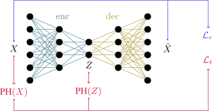
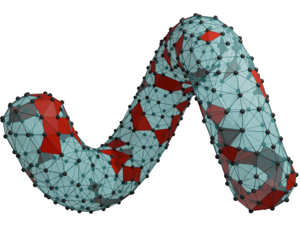

Mattéo Clémot
PhD student in computer science
I am a PhD student in topological data analysis at the Université Lyon 1.
Education
| 2023– |
Ph.D. student in computer science Dimensionality reduction under topological constraints Supervised by Julie Digne (LIRIS) & Julien Tierny (LIP6) Part of the project TORI |
 |
| 2019– |
Bachelor's and master's degree in fundamental computer science ENS de Lyon |
|
| 2016– |
Classe préparatoire aux grandes écoles, MPSI - MP* Lycée Condorcet, Paris |
 |
Publications
|  | M. Clémot, J. Digne, J. Tierny, Topological Autoencoders++: Fast and Accurate Cycle-Aware Dimensionality Reduction. Preprint. arXiv Code |
|  | D. Attali, M. Clémot, B. B. Dornelas, and A. Lieutier, When alpha-complexes collapse onto codimension-1 submanifolds. Accepted at SOCG 2025. arXiv |
| M. Clémot and J. Digne, Neural skeleton: implicit neural representation away from the surface, Computer & Graphics, 2023. Presented at SMI 2023. HAL Code GRSI Slides |
Research internships
| Feb.–Apr. 2023 |
Vector-field design on implicit SDFs Supervised by Amir Vaxman Institute of Perception, Action and Behaviour, The University of Edinburgh |
||
| Oct.–Dec. 2022 |
Solving ill-posed inverse problems involving partial differential equations with neural networks Supervised by Elisa Riccietti & Stefania Bellavia Team DANTE, LIP, Lyon Report Slides |
Report Slides |
|
| Feb.–July 2022 |
Learning the topology of shapes given by point clouds Supervised by Julie Digne Team Origami, LIRIS, Lyon Report Slides Code |
Report Slides Code |
|
| Apr.–July 2021 |
Surface reconstruction with Delaunay complexes Supervised by Dominique Attali Team GAIA, GIPSA-lab, Grenoble Report Slides Code |
Report Slides Code | |
| June–July 2020 |
Links between tropical linear programming, mean payoff games and parity games Supervised by Stéphane Gaubert & Xavier Allamigeon Team Tropical, INRIA Saclay & CMAP (École polytechnique), Palaiseau Report Slides |
Report Slides |